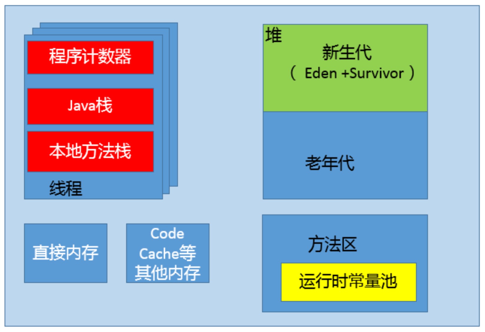

《Java核心技术36讲 - 杨晓峰》¶
第25讲 | 谈谈JVM内存区域的划分，哪些区域可能发生 OutOfMemoryError?¶
Java 内存区域¶

程序计数器（PC，Program Counter Register）¶
每个线程都有自己的程序计数器，并且任何时间一个线程都只有一个方法在执行，也就是所谓的当前方法。程序计数器会存储当前线程正在执行的Java方法的JVM指令地址；如果是在执行本地方法，则是未指定值(undeifned)。
Java 虚拟机栈（Java Virtual Machine Stack）¶
每个线程在创建时都会创建一个虚拟机栈，其内部保存一个个的栈帧(StackFrame)，对应着一次次的Java方法调用。
前面谈程序计数器时，提到了当前方法；同理，在一个时间点，只有一个活动的栈帧，通常叫作当前帧，方法所在的类叫作当前类。如果在该方法中调用了其他方法，对应的新的栈帧会被创建出来，成为新的当前帧，一直到它返回结果或者执行结束。JVM直接对Java栈的操作只有两个，就是对栈帧的压栈和出栈。
栈帧中存储着局部变量表、操作数(operand)栈、动态链接、方法正常退出或者异常退出的定义等。
堆（Heap）¶
Java内存管理的核心区域，用来放置Java对象实例，几乎所有创建的Java对象实例都是被直接分配在堆上。堆被所有的线程共享，在虚拟机启动时，我们指定的“Xmx”之类参数就是用来指定最大堆空间等指标。
理所当然，堆也是垃圾收集器重点照顾的区域，所以堆内空间还会被不同的垃圾收集器进行进一步的细分，最有名的就是新生代、老年代的划分。
方法区（Method Area）¶
这也是所有线程共享的一块内存区域，用于存储所谓的元(Meta)数据，例如类结构信息，以及对应的运行时常量池、字段、方法代码等。
由于早期的 Hotspot JVM 实现，很多人习惯于将方法区称为永久代(Permanent Generation)。Oracle JDK 8 中将永久代移除，同时增加了元数据区 (Metaspace)。
运行时常量池（Runtime Consist Pool）¶
这是方法区的一部分。如果仔细分析过反编译的类文件结构，你能看到版本号、字段、方法、超类、接口等各种信息，还有一项信息就是常量池。Java的常量池可以存放各种常量信息，不管是编译期生成的各种字面量，还是需要在运行时决定的符号引用，所以它比一般语言的符号表存储的信息更加宽泛。
本地方法栈（Native Method Stack）¶
和Java虚拟机栈是非常相似的，支持对本地方法的调用，也是每个线程都会创建一个。在 Oracle Hotspot JVM 中，本地方法栈和Java虚拟机栈是在同一块儿区域，这完全取决于技术实现的决定，并未在规范中强制。